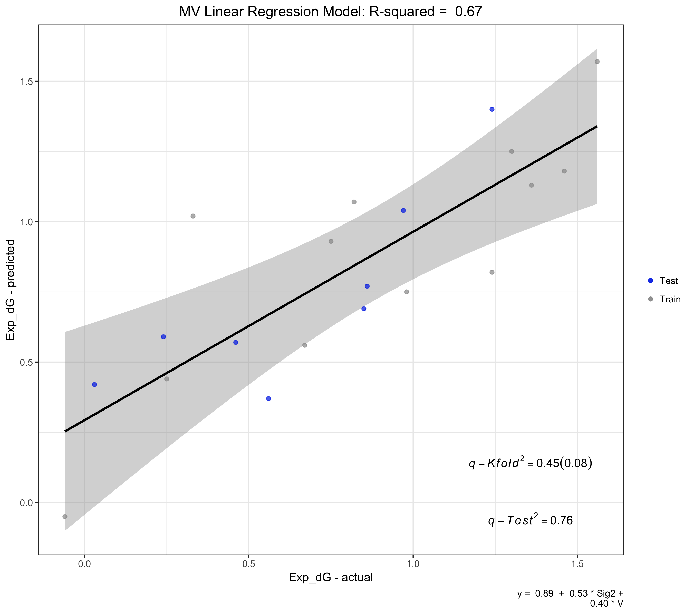
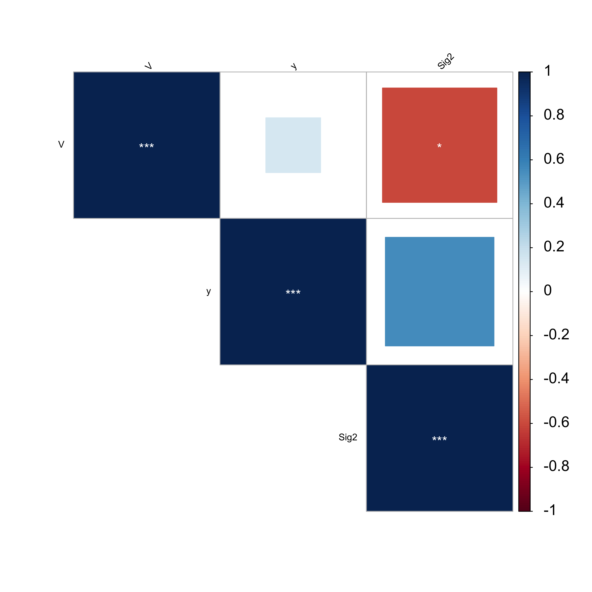
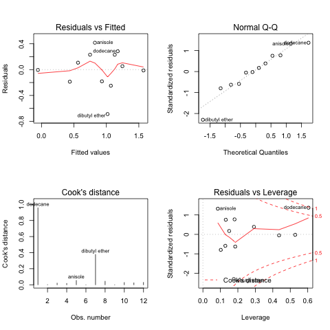
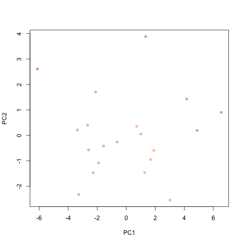

Example REGGAE Workflow¶
Installation¶
Clone REGGAE from GitHub. Here is the REGGAE GitHub Page
git clone https://github.com/Liliana-Gallegos/REGGAE.git
Create a new conda environment with all the r-essentials conda packages built from CRAN:
conda create -n r_env r-essentials r-base
Activate the r_env:
conda activate r_env
Note: To list the r packages already installed in r_env use conda list
Install all packages required for REGGAE with conda:
conda install --yes --file requirements.txt
Note: Maybe need to install using older version of python. Add python=3.9
Confirm by running REGGAE help options:
Rscript reggae.r -h
Warning
With error: could not find function "all_of", then run setup_for_allof.r script
using Rscript setup_for_allof.r
Example 1: Performing a multivariate regression¶
Using (i) Forward-stepwise feature selection and (ii) Random 70 Train and 30 Test split on a dataset containg 20 samples and 17 features.
Rscript reggae.r -i 20solvents.csv -y Exp_dG -m stepwise -r 0.7
Note
Other feature selection -m options are available.
Warning
Dredge option takes time and therefore should be executed with small number of features.
First portion of the Terminal output (without using the verbose option) includes the split performed, regression formula in both scaled and nonscaled versions, and the R2 and RMSE values.
***** RESULTS PROVIDED BY REGGAE *****
o Using Random Sampling for "Train" Samples: 70 %
Total Number of Training Samples: 14
Total Number of Testing Samples: 6
Total Number of Variables (including response): 18
o Forward Step-wise features selected for linear regression:
Number of features (including response): 4
a) scaled coefficients:
y = 0.69 + 0.52 * gamma + 0.33 * area + -0.31 * n
b) unscaled:
y = 3.82 + 0.07 * gamma + 0.01 * area + -4.92 * n
R2-train= 0.68
adj R2-train = 0.59
RMSE-train = 0.25
Example 2: Performing a multivariate regression¶
Using (i) manual feature selection, (ii) predefined split selection, and (iii) cross-validation.
The split has been defined as Train and Test within the 12kclusters column in the dataset.
Therefore, the script will pick up the column with two catagorical variables.
To execute this option, -r is set to 0.
Rscript reggae.r -i 20solvents.csv -y Exp_dG -b Sig2,V -r 0 -q -v
Note
Error can occur if there are multiple columns with strings or characters.
First portion of the Terminal output (without using the verbose option) includes the split performed, regression formula in both scaled and nonscaled versions, R2 and RMSE values, and three cross validation analysis: Leave-one-out, K-fold (k=5), and Q2.
***** RESULTS PROVIDED BY REGGAE *****
o Using data option with pre-defined Test/Train split.
Labels: TEST TRAIN
o Using Pre-selected "Train" Samples: 60 %
Total Number of Training Samples: 12
Total Number of Testing Samples: 8
Total Number of Variables (including response): 19
o Linear regression model with SELECTED features:
Number of features (including response): 3
a) scaled coefficients:
y = 0.888 + 0.533 * Sig2 + 0.400 * V
b) unscaled:
y = -1.13 + 0.03 * Sig2 + 1.09 * V
R2-train = 0.67
adj R2-train = 0.6
RMSE-train = 0.29
o Cross Validation for model ( k = 5 ):
LOO-q2 (train) = 0.5
Iteration 1 : Kfold-q2 = 0.55
Iteration 2 : Kfold-q2 = 0.61
Iteration 3 : Kfold-q2 = 0.39
Iteration 4 : Kfold-q2 = 0.42
Iteration 5 : Kfold-q2 = 0.55
Avg Kfold-q2 (train) = 0.5 ( +/- 0.09 )
RMSE = 0.38
q2 (test) = 0.76
RMSE-test = 0.22
Using the -v option prints out the following Terminal output: preview of the scaled values,
ANOVA analysis, regression plot (.png), a table of predicted y-values.
********** DETAILED RESULTS **********
o Dataset preview ( y = Exp_dG )
y Sig2 V
dodecane 1.46 -1.2475538 2.37937801
quinoline 1.30 0.4318541 0.32214382
acetonitrile 0.67 0.4561040 -1.42177832
dioxane 0.75 0.5822035 -0.66764982
anisole 1.24 -0.1016439 -0.02740345
o Linear Regression model with SELECTED features:
Call:
lm(formula = y ~ ., data = data)
Residuals:
Min 1Q Median 3Q Max
-0.68843 -0.18283 0.02388 0.23091 0.41676
Coefficients:
Estimate Std. Error t value Pr(>|t|)
(Intercept) 0.88833 0.09526 9.325 6.38e-06 ***
Sig2 0.53260 0.12580 4.234 0.00219 **
V 0.39982 0.12580 3.178 0.01122 *
---
Signif. codes: 0 ‘***’ 0.001 ‘**’ 0.01 ‘*’ 0.05 ‘.’ 0.1 ‘ ’ 1
Residual standard error: 0.33 on 9 degrees of freedom
Multiple R-squared: 0.6724, Adjusted R-squared: 0.5996
F-statistic: 9.238 on 2 and 9 DF, p-value: 0.006589
o Regression plot(s) saved in working file.
o Predicted y-values:
Y Pred_Y Split
cyclohexane -0.06 -0.05 Train
toluene 0.03 0.42 Test
xylenes 0.24 0.59 Test
chlorobenzene 0.25 0.44 Train
dibutyl ether 0.33 1.02 Train
DCB 0.46 0.57 Test
THF 0.56 0.37 Test
acetonitrile 0.67 0.56 Train
dioxane 0.75 0.93 Train
nitrobenzene 0.82 1.07 Train
pyridine 0.85 0.69 Test
tetralin 0.86 0.77 Test
benzonitrile 0.97 1.04 Test
mesitylene 0.98 0.75 Train
anisole 1.24 0.82 Train
NMP 1.24 1.40 Test
quinoline 1.30 1.25 Train
DMF 1.36 1.13 Train
dodecane 1.46 1.18 Train
DMSO 1.56 1.57 Train
...
Continued Terminal output includes analysis for the three cross-validation methods.
o I. Leave-one-out Cross validation:
---- CALL ----
looq2(modelData = data_train, formula = formula)
---- RESULTS ----
-- MODEL CALIBRATION (linear regression)
#Elements: 12
mean (observed): 0.8883
mean (predicted): 0.8883
rmse (nu = 0): 0.2858
r^2: 0.6724
-- PREDICTION PERFORMANCE (cross validation)
#Runs: 1
#Groups: 12
#Elements Training Set: 11
#Elements Test Set: 1
mean (observed): 0.8883
mean (predicted): 0.8589
rmse (nu = 1): 0.4018
q^2: 0.5014
o II. K-fold Cross validation ( k = 5 ):
---- CALL ----
cvq2(modelData = data_train, formula = formula, nFold = K)
---- RESULTS ----
-- MODEL CALIBRATION (linear regression)
#Elements: 12
mean (observed): 0.8883
mean (predicted): 0.8883
rmse (nu = 0): 0.2858
r^2: 0.6724
-- PREDICTION PERFORMANCE (cross validation)
#Runs: 1
#Groups: 5
#Elements Training Set: 9 (+1)
#Elements Test Set: 3 (-1)
mean (observed): 0.8883
mean (predicted): 0.8837
rmse (nu = 1): 0.3816
q^2: 0.5530
o III. Test set validation:
---- CALL ----
q2(modelData = data_train, predictData = data_test, formula = formula)
---- RESULTS ----
-- MODEL CALIBRATION (linear regression)
#Elements: 12
mean (observed): 0.8883
mean (predicted): 0.8883
rmse (nu = 0): 0.2858
r^2: 0.6724
-- PREDICTION PERFORMANCE (model and prediction set available)
#Elements Model Set: 12
#Elements Prediction Set: 8
mean (observed): 0.6512
mean (predicted): 0.7306
rmse (nu = 0): 0.2181
q^2: 0.7592
******************END*****************
Regression Plot Generated¶
From Example2: Regression plot is saved in working folder as REGGAE-MV-linear-plot.png.

Pearson Correlation Plot¶
Adding the -c 0.5 option outputs: pairwise correlations between features > 0.5
********** DETAILED RESULTS **********
...
o Correlation table for all variables:
y Sig2 V
y 1.00 0.55 0.14
Sig2 0.55 1.00 -0.61
V 0.14 -0.61 1.00
o Correlation plot saved in working file.
Using the -v option saves the plot within the working folder as REGGAE-correlation-plot.png.

Diagnostics Plot¶
Adding the -d option outputs: QSAR analysis for the Test set and collinearity analysis in the first section (withou -v option).
o Diagnostic results:
I. Reduced model significance:
F-value full = 9.238
F-value reduced = 9.238
II. QSAR model criteria for Test data set:
Satisfactory conditions include:
R2-test > 0.6; R2-diff < 0.1; 0.85 <= k <= 1.15 or 0.85 <= k'<= 1.15;
R2 = 0.708
k = 0.91
k' = 1.02
R2-diff (actual) = -0.342
R2-diff (pred) = -0.41
IV. Collinearity diagnostics for reduced model:
Note: VIF > 4 or 10 indicates collinearity.
Variables with collinearity:
No collinearity found within model. VIF < 4
Using the -v option saves the plot within the working folder as REGGAE-diagnostics-plot.png.

PCA Plot¶
Using the -p 5,2 option requests running principal componenet analysis with k-means clustering using 5 clusters and 2 components.
Using the -v option gives the PCA-clusters and Scree plots (or elbow plots) for each the clusters and components.
Also, within the terminal output, the script returns the loadings.
Showing only the PCA clustering plot.
